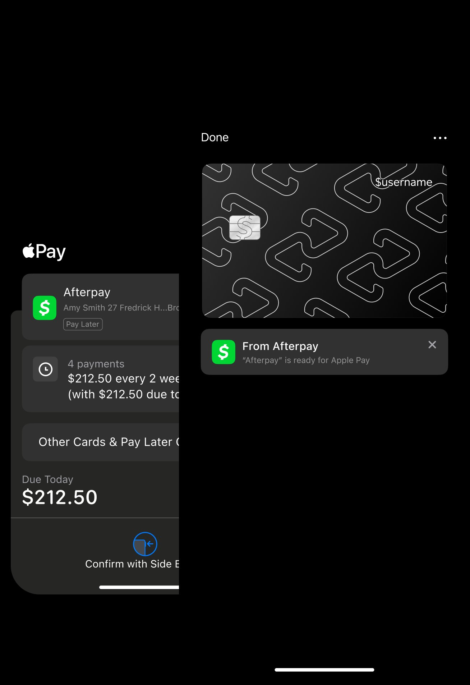

Afterpay · Block Inc · 2023–2025
Replacing passwords with biometrics, streamlining login for 40% of users who were failing to access the app: and integrating Afterpay natively into Apple Pay and Google Pay.
My role
Lead designer across 3 workstreams
Partners
Risk, platform partnerships, security
Impact
40% login failure → resolved
40% of Afterpay users were failing to log in: not because they didn't want to use the app, but because they couldn't remember their email address or password. Meanwhile, 97% of those users had biometrics enabled on their device. The solution was obvious. Getting there wasn't.
These projects sat at the intersection of design, security, risk and platform partnerships: where every decision has implications beyond the user experience. I led design across three connected workstreams: biometric and mobile-number login, persistent sessions, and the native integration of Apple Pay and Google Pay.

Authentication is rarely glamorous product design. But it's the gate to everything else. A user who can't log in isn't a user: and with 40% of Afterpay's active base hitting that wall, fixing access was one of the highest-leverage design problems in the product.
The digital wallet integrations were equally significant. Making Afterpay available in Apple Pay and Google Pay meant it could compete natively with credit cards in the device wallet: a major step in normalising buy-now-pay-later as a default payment method.